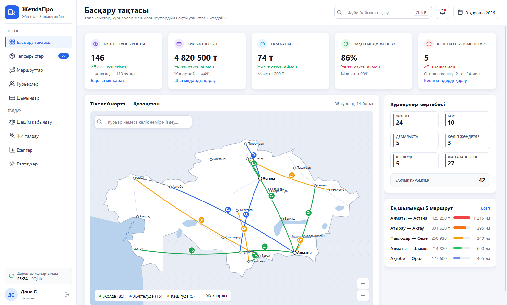
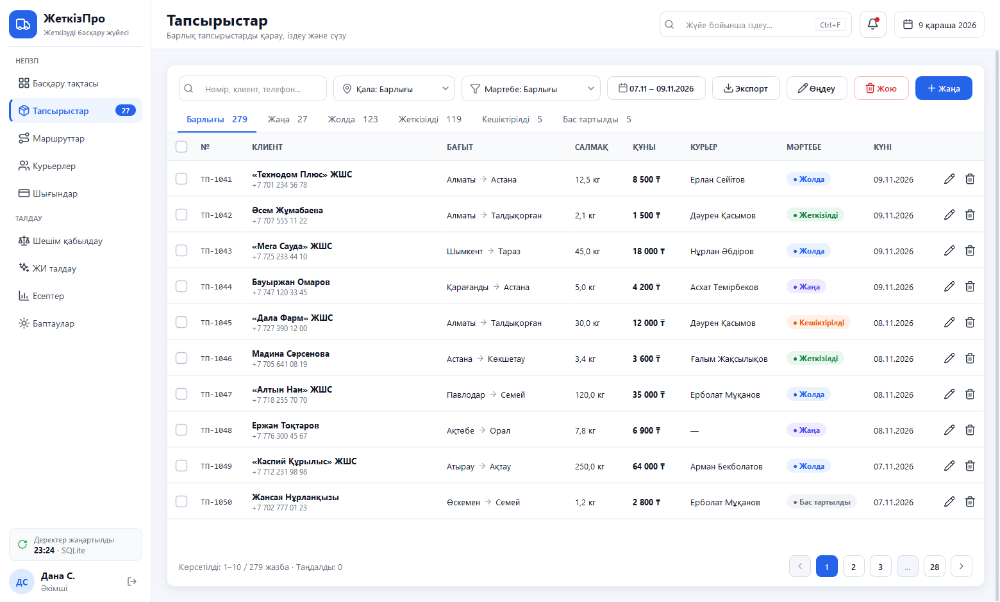
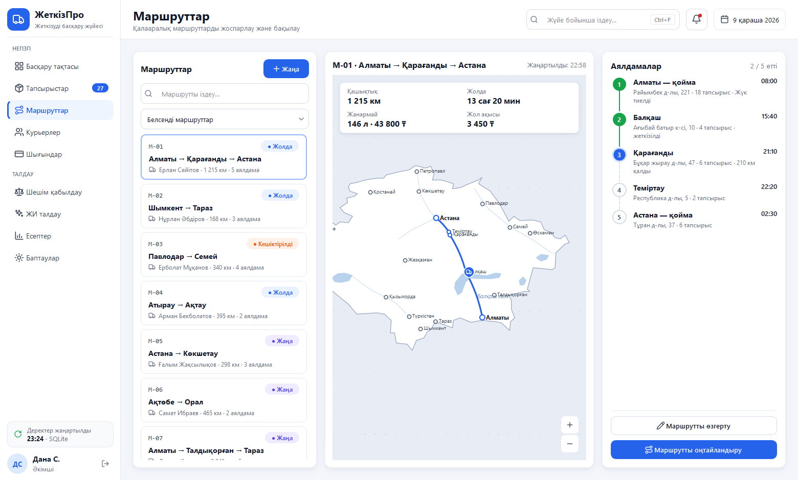
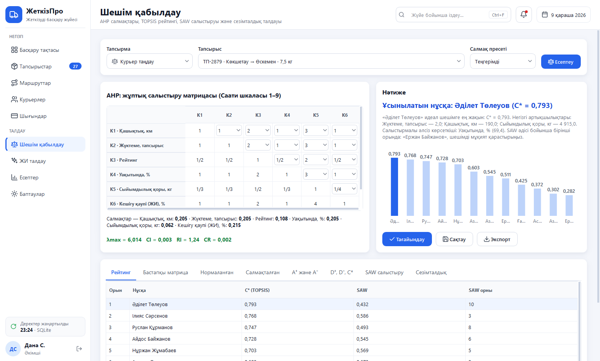
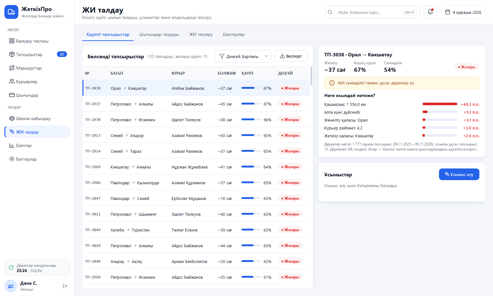

Тапсырыстар
Тапсырысты қосу, іздеу, өңдеу және жою. Құны тариф бойынша автоматты есептеледі, мәртебенің әр өзгерісі тарихқа жазылады.
- Нөмір, клиент, телефон бойынша іздеу
- Қала, мәртебе және кезең бойынша сүзгі
- Excel және PDF форматында экспорт
Қазақстан бойынша жеткізуді басқаруға арналған Windows бағдарламасы. Курьерді AHP мен TOPSIS әдістері таңдайды, ал жасанды интеллект кешігу қаупін алдын ала көрсетеді.
Windows үшін жүктеуНұсқа 1.0, 81 МБ, Windows 10 және 11Интернетсіз жұмыс істейді. Әкімші құқығы қажет емес.

Барлық деректер бір SQLite дерекқорында сақталады. Көрсеткіштер мен графиктер осы деректерден есептеледі.
Тапсырысты қосу, іздеу, өңдеу және жою. Құны тариф бойынша автоматты есептеледі, мәртебенің әр өзгерісі тарихқа жазылады.

Әр маршруттың аялдамалары, қашықтығы, жанармай мен жол ақысы картада көрінеді. «Ең жақын көрші» мен 2-opt әдісі аялдамалар ретін қысқартып, үнемделген километрді көрсетеді.

AHP жұптық салыстыру арқылы критерийлердің салмағын анықтап, сәйкестікті (CR) тексереді. TOPSIS курьерлерді рейтингке қояды, SAW нәтижені салыстырады.

Дерекқордағы 1 700-ден астам тапсырыста оқытылған модельдер жеткізу уақытын және кешігу қаупін болжайды. Әр болжамның қасында «Неге осындай нәтиже?» түсіндірмесі бар.
Модельдер үш түрлі деректер жинағында тексерілген: қалыпты маусым, қысқы шың және жаңа бағыттар.

Орнатқыш бағдарламаны пайдаланушы қалтасына қояды, сондықтан әкімші құпия сөзі сұралмайды.
ZhetkizPro-Setup-1.0.exe файлын жүктеп, ашыңыз.
Шеберде «Далее», содан кейін «Установить» батырмасын басыңыз. Жұмыс үстеліне белгіше қосуға болады.
Бірінші іске қосуда бағдарлама дерекқорды толтырып, модельдерді оқытады. Бұл шамамен 30 секунд алады.
Әр рөл өз бөлімдерін көреді. Кіру терезесінде пайдаланушының рөлін таңдаңыз.
| Логин | Құпия сөз | Рөлі | Бөлімдер |
|---|---|---|---|
aigerim.dispatcher | Admin123! | Диспетчер | Тапсырыстар, маршруттар, курьерлер |
marat.manager | Admin123! | Менеджер | Қосымша: шығындар, шешімдер, ЖИ, есептер |
dana.admin | Admin123! | Әкімші | Барлық бөлім, оның ішінде баптаулар |